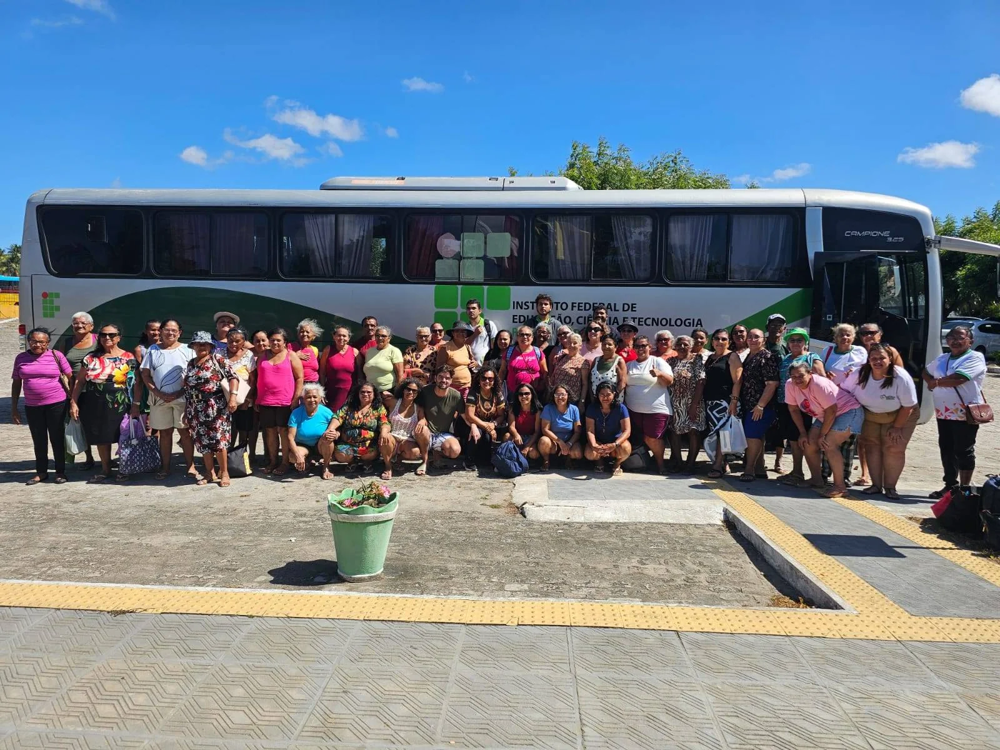
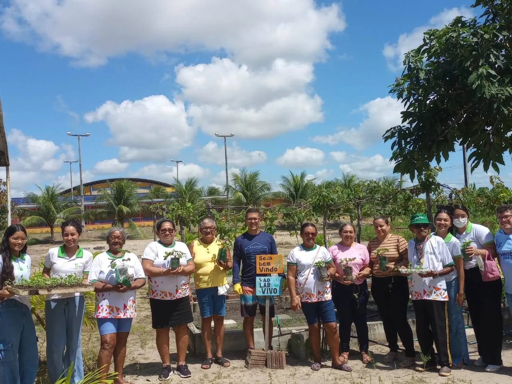
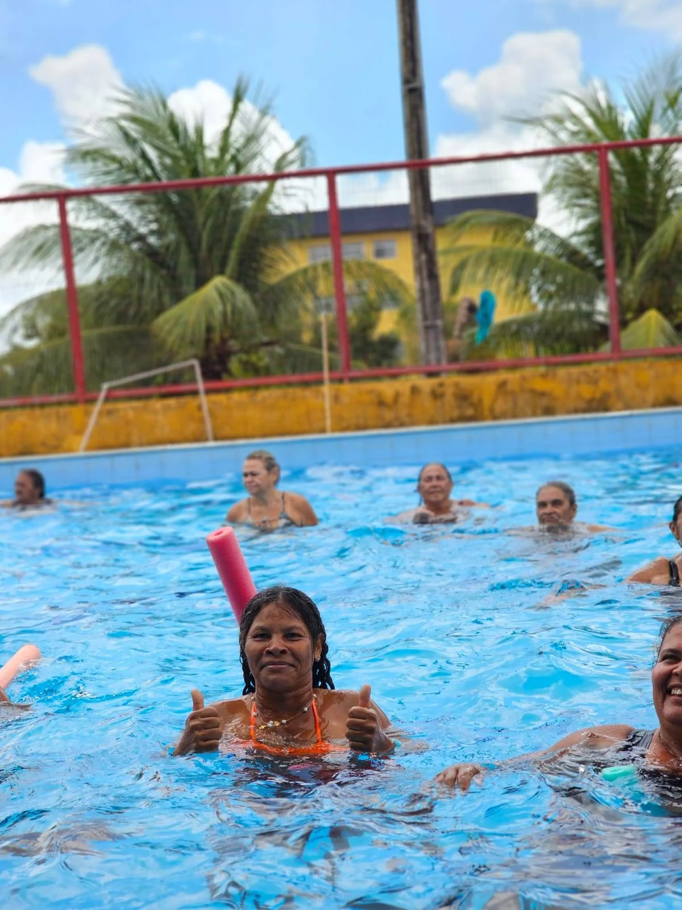
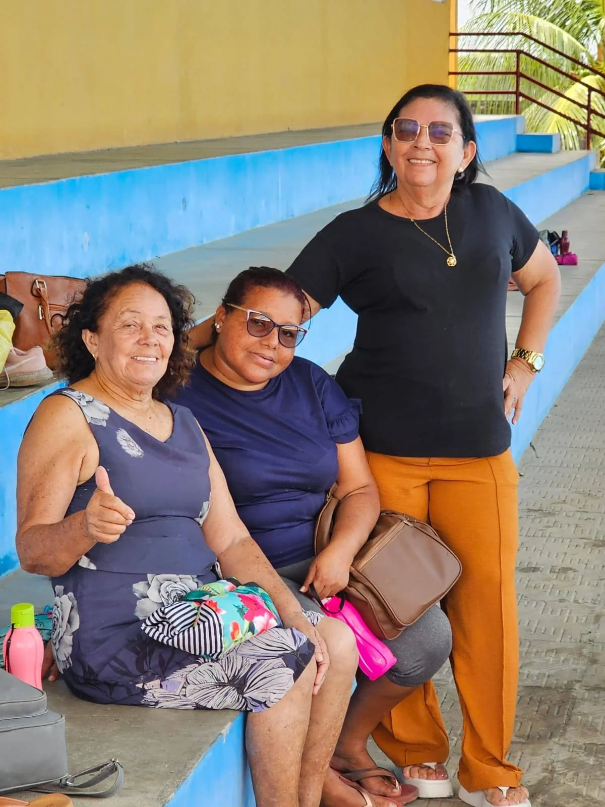

Projeto de extensão · IFRN Canguaretama
Projeto 02 / 03
ConecTI.
Conectando experiências com a terceira idade.
Inclusão digital, saúde e lazer em encontros que aproximam o IFRN da população idosa de Canguaretama e da região do Litoral Sul potiguar.

Aprender, participar, conviver.
O ConecTI é um projeto multidisciplinar que busca oferecer experiências de formação, saúde e lazer para pessoas idosas, promovendo inclusão digital, integração e socialização.
Realizado pelo IFRN Campus Canguaretama, o projeto reúne atividades presenciais e aproxima os conhecimentos desenvolvidos no instituto das vivências da comunidade. Participam pessoas de Canguaretama e de municípios próximos.
Há também uma proposta de troca entre gerações: estudantes da área de informática e participantes mais velhos podem compartilhar aprendizados e experiências em um mesmo ambiente.
Experiências que vão além da sala de aula.
Formação, atividades corporais e momentos de convivência fazem parte da proposta oficial do ConecTI.
O ConecTI aproxima pessoas por meio da inclusão digital, do cuidado com a saúde e o movimento e das experiências de lazer e convivência.
A formação inclui um curso FIC de curta duração para participantes matriculados no IFRN. Fora desse espaço de aprendizagem, encontros esportivos e atividades de lazer também criam oportunidades para compartilhar vivências, participar e fortalecer a socialização.

O grupo reunido em uma atividade ao ar livre no campus.

Registro de atividade aquática com participantes do projeto.
Inclusão digital também faz parte da experiência.
O ConecTI prevê um curso FIC de curta duração em Inclusão Digital para os participantes matriculados no IFRN.
A proposta une formação e troca de conhecimentos, beneficiando tanto a comunidade idosa quanto estudantes do curso técnico de informática.
O centro do projeto são as pessoas.
O ConecTI busca criar momentos de participação em que a população idosa possa encontrar oportunidades de aprender, se movimentar e conviver.
O projeto também aproxima a vivência dos participantes da formação dos estudantes, em um encontro entre diferentes gerações.
Registros reais enviados pela equipe do projeto
Onde e quando acontecem os encontros?
Informações de funcionamento compartilhadas para esta página pela equipe responsável pelo projeto.
As informações de agenda e transporte foram fornecidas para a divulgação do projeto. Para confirmar a programação de um encontro específico, consulte a equipe responsável.
Alguns registros do projeto.
Encontros, passeios e apresentações reunidos em fotografias reais. Clique em uma imagem para ampliar.
O ConecTI continua no portal do IFRN.
Confira a descrição institucional, as informações da coordenação e o período de execução do projeto.
Acessar página oficial